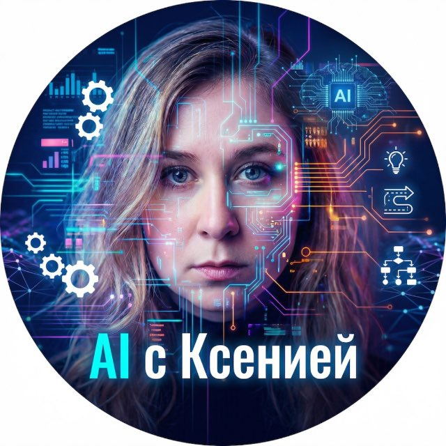

2021 — сейчас
Менеджер продукта — VK
Начинала с финтех-сервисов и VK Pay, с 2023 — менеджер продукта в VK ID. Запускаю новые продукты, внедряю AI в процессы команды и веду серию корпоративных воркшопов по нейросетям для сотрудников VK.
Ксения Теселкина · Москва
Внедряю ИИ в продукты и рабочие процессы команд. Запустила корпоративные AI‑воркшопы для сотрудников VK и научила сотни специалистов применять нейросети в ежедневной работе.


В IT больше 15 лет: прошла путь от C#-разработчика и системного аналитика до менеджера продукта в VK. Последние два года мой фокус — искусственный интеллект.
За плечами 30+ продуктов — от ГИС и финтеха до образовательных платформ. Сегодня внедряю LLM в продуктовые процессы, проектирую AI-агентов и учу команды работать с нейросетями так, чтобы это давало измеримый результат, а не красивые демо. Веду корпоративные курсы и открытые воркшопы: от промпт-инжиниринга до сборки кликабельных прототипов с AI.
Начинала с финтех-сервисов и VK Pay, с 2023 — менеджер продукта в VK ID. Запускаю новые продукты, внедряю AI в процессы команды и веду серию корпоративных воркшопов по нейросетям для сотрудников VK.
Основала школу BeAnalyst для начинающих аналитиков. В Systems.Education — соавтор и ведущий тренер курса «AI-driven разработка требований и проектирование решений»: учу IT-специалистов создавать требования с помощью ИИ — без галлюцинаций.
Выступления на крупнейшей конференции для системных и бизнес-аналитиков: практика анализа, инструменты, применение AI.
C#-разработчик в транспортном моделировании, системный аналитик в 2GIS, руководитель отдела бизнес-анализа в Magora Systems, собственное аналитическое агентство. 20+ проектов для заказчиков из России, США, ОАЭ, ЮАР и Великобритании.
Форматы под задачу: от 2-часового интенсива для команды до многонедельного корпоративного курса.
Серия обучений для сотрудников компаний: как встроить нейросети в ежедневную работу. Запущено для команд VK.
формат: корпоративныйКурс Systems.Education: 15 техник выявления и анализа требований с помощью ИИ — с инженерной строгостью, без галлюцинаций.
формат: онлайн-курсВоркшоп: собираем работающий прототип приложения без разработчиков — только идея, Cursor и правильные промпты.
формат: воркшопПрактикум по созданию персональных AI-ассистентов: настраиваем агентов под свои задачи и учим их новым навыкам.
формат: воркшопМастер-класс: превращаем Notion в единый источник правды по требованиям — структура, шаблоны, связи.
формат: мастер-классВоркшоп: строим CJM, который команда реально использует, а не вешает на стену. От исследования до инсайтов.
формат: воркшопНужен воркшоп под вашу команду?
Собрать программуТелеграм-канал про AI без хайпа: разборы инструментов, рабочие промпты, кейсы внедрения нейросетей в продукт и честные выводы — что работает, а что нет.
Подписаться в Telegram
Корпоративное обучение, воркшоп для команды, консультация по внедрению AI или выступление на вашей конференции.